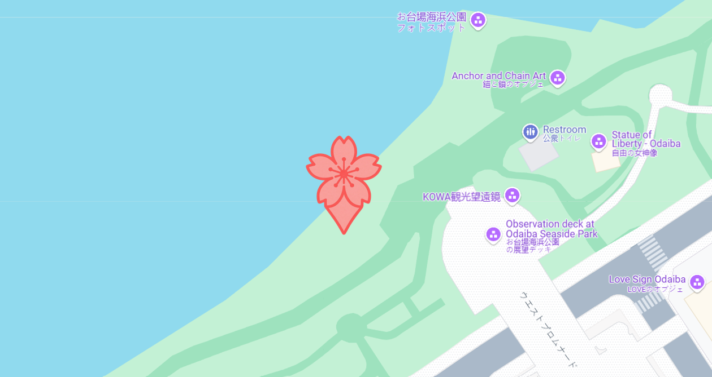

すべての謎を、見事なスキルとひらめきで解き明かしました。
ヴェオリア・トレジャーハントへのご参加、そしてその冒険心に感謝いたします！
いよいよ最後のチャレンジです。以下の画像に示された場所へ向かってください：
そこに到着したら、よく探してください… 小さな石の隠れた浜辺、まるで海賊の入り江が見つかるはずです。

この浜辺の左側のどこかに、小さなプラスチックの箱が隠されています… その中には本当の宝物が入っています！
箱の中にはいくつかの紙が入っています。自分の順位に対応する紙を1枚だけ取ってください：
最初に到着した方は「1番」の紙、2番目の方は「2番」の紙、というように。
✨トレジャーハントへのご参加、本当にありがとうございました！✨